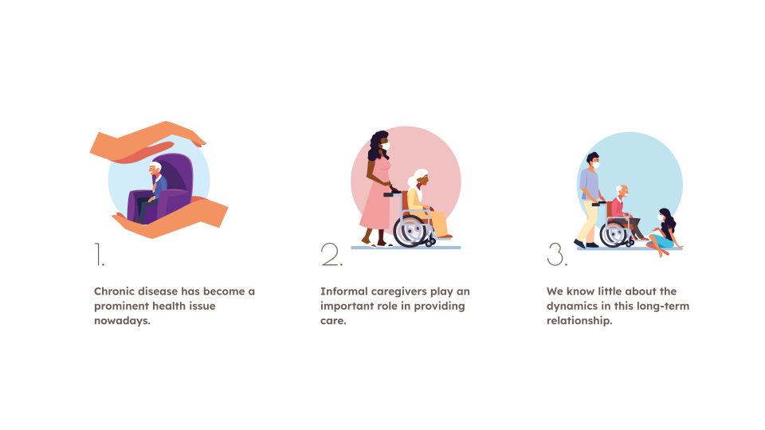
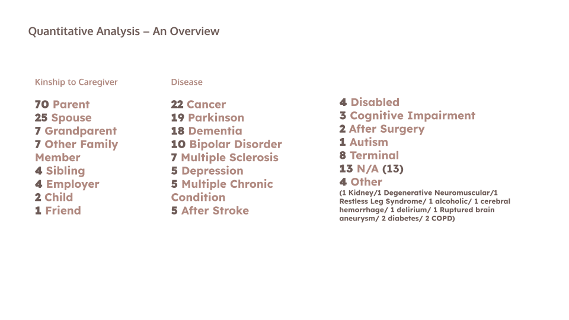
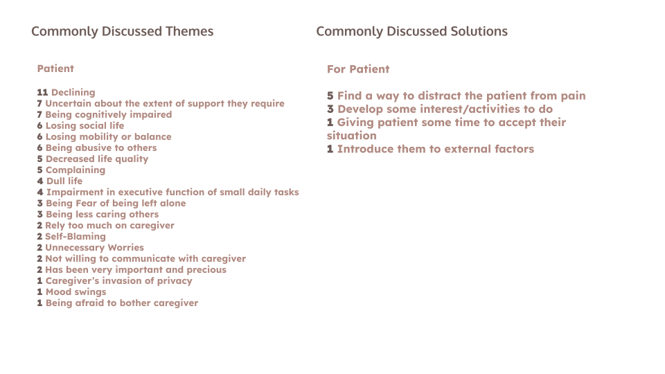
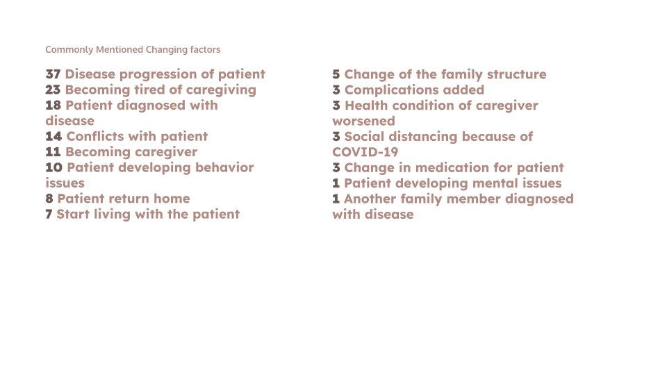
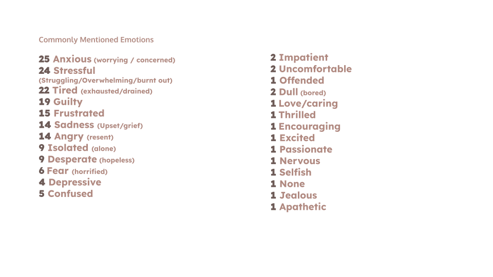
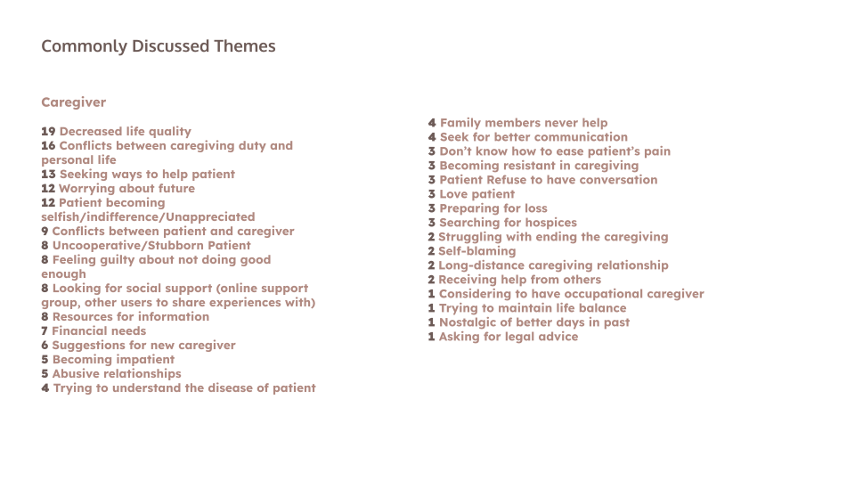
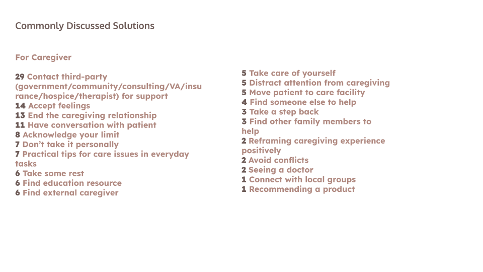
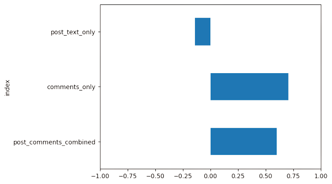

Overview
Using Online Caregiving Communities to Probe the Long-Term Chronic Disease Family Caregiving Experience
Role
Research Intern
Timespan
May 2023- current
Tools
Figma
Miro
Background
Research Questions
1. What are the values and factors that mediate a long-term caregiving relationship?
2. How do patients and caregivers deal with the constant-changing nature of chronic care?
Research Method
Qualitative: Performed thematic analysis on caregiving subreddits to generate common themes
Quantitative: Summarized the common characteristics of the caregiving scenarios and ran sentiment analysis
Data
How can I better understand common problems associates face using the BOLT application to help save them time and better encourage them to keep the bays organized?
     Sentiment Analysis
Overall sentiment of threads or conversations were positive, in that posts tend to be written in negative, but close to neutral, and most of comments were positive and supportive.
Implication & Conclusion
In this study, we collected 120 posts sharing about the caregiving experience from subreddits. We unpacked the long-term informal caregiving experience through both quantitative and qualitative analysis. Based on the findings, we are suggesting following directions for future researchers:
1. Looking into the chronological perspective for caregiving relationship
2. Developing framework to categorize different caregiving stages and caregiving relationships
3. Creating a wiki for caregivers to search for solutions that can help with their specific situation.